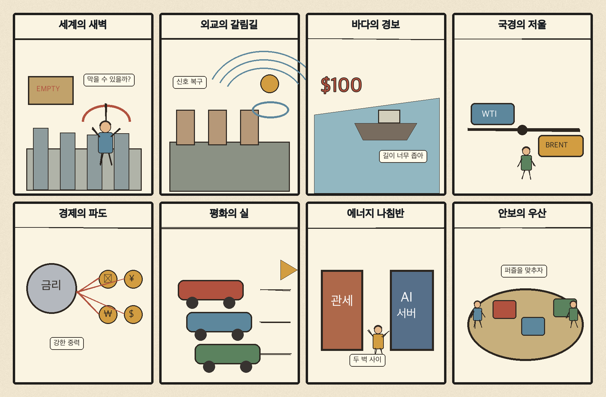
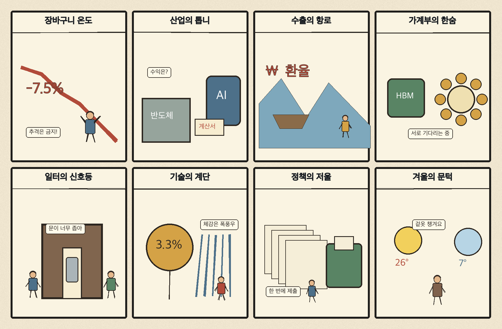

01
마이크로스트래티지 · 102.67→96.50달러 · -6.01%
내용요약 시가 대비 -6.01%로 조사군 최하위였습니다.
예상여파 가상자산 연계 고베타 종목의 위험회피가 확대됐습니다.
MORNING_BRIEFING_20261118
작성 시각: 2026-11-18 06:36 KST · 직전 미국 정규장과 2026-11-18 KST 당일 공개 기사 기준
11월 17일 뉴욕증시는 다우 -1.64%, S&P 500 -1.03%, 나스닥 -0.74%로 나흘째 위험회피가 이어졌습니다. 장 마감 뒤 엔비디아 실적은 예상을 웃돌았지만 공시 조사 보도와 경영 불확실성이 동시에 남았습니다. 전날 KOSPI -2.59%, KOSDAQ -2.34%까지 이틀 연속 하락한 국내 시장은 실적 안도보다 외국인 수급과 5,000선 회복 여부를 먼저 확인해야 합니다.
| 지수 | 종가 | 등락률 | 한국 증시 시사점 |
|---|---|---|---|
| 다우존스 | 50,759.42 | -1.64% | 경기민감·금융주까지 위험회피 확산 |
| S&P 500 | 7,340.53 | -1.03% | 성장주·반도체 투자심리 부담 |
| 나스닥 종합 | 24,328.38 | -0.74% | 성장주·반도체 투자심리 부담 |
기술주를 넘어 경기민감주까지 매도 범위가 넓어졌습니다.
전날 5,000선 아래로 내려와 지지선 회복 여부가 핵심입니다.
HBM 심리에는 우호적이지만 공시 조사와 경영 공백을 함께 봐야 합니다.
장전 예측보다 개장 후 외국인 수급과 저점 재확인을 기다립니다.
11월 17일 보고서는 종합점수·확률·손익비와 30건 이상 유사 조건 표본을 모두 검증한 후보가 없어 공식 추천을 내지 않았습니다. 사후 종목을 추가하지 않습니다.
| 시장 | 종가 | 등락률 | 기준 |
|---|---|---|---|
| KOSPI | 4,968.48 | -2.59% | 11월 17일 · 시가 대비 -0.79% |
| KOSDAQ | 650.06 | -2.34% | 11월 17일 · 시가 대비 -1.03% |
| 다우존스 | 50,759.42 | -1.64% | 미국 11월 17일 정규장 |
| S&P 500 | 7,340.53 | -1.03% | 미국 11월 17일 정규장 |
| 나스닥 종합 | 24,328.38 | -0.74% | 미국 11월 17일 정규장 |
ARM +2.71%, 브로드컴 +1.79%로 선택적 반등이 나타났습니다.
홈디포 +1.18%로 하락장 속 방어했습니다.
마이크로스트래티지 -6.01%, 코인베이스 -2.30%로 위험회피가 컸습니다.
슈퍼마이크로 -4.74%, 오라클 -3.38%로 조정됐습니다.
내용요약 시가 대비 -6.01%로 조사군 최하위였습니다.
예상여파 가상자산 연계 고베타 종목의 위험회피가 확대됐습니다.
내용요약 시가 대비 -4.74%로 하락했습니다.
예상여파 AI 서버 투자 기대보다 밸류에이션과 실적 가시성 우려가 앞섰습니다.
내용요약 시가 대비 -3.51%로 약세였습니다.
예상여파 성장주 전반의 할인율 부담이 전자상거래 플랫폼에도 번졌습니다.
내용요약 시가 대비 +2.71%로 조사군 최상위였습니다.
예상여파 반도체 안에서도 설계 IP의 선택적 상대강세가 나타났습니다.
내용요약 시가 대비 +1.79%로 상승했습니다.
예상여파 맞춤형 AI칩과 네트워크 수요 기대가 하락장 속 방어 요인으로 작용했습니다.
국내 시장이 이틀 연속 하락한 뒤 미국 3대 지수도 약세를 이어가 오늘 시초가의 하방 압력이 남아 있습니다. 장 마감 뒤 엔비디아의 예상 상회 실적은 HBM 심리를 지지할 수 있지만, 공시 조사와 경영 공백 보도가 상승 폭을 제한할 수 있습니다. KOSPI 5,000선 재탈환, 외국인 현·선물 동시 순매수, 반도체 대형주의 시초가 회복을 확인하기 전까지는 지수 반등을 선취하지 않는 편이 안전합니다.
오늘은 추천 없음 — 현금 관망
국내 지수가 이틀 연속 하락했고 미국 지수도 동반 약세인 가운데, 개장 전 당일 시가·실시간 수급 및 30건 이상 유사 조건 표본을 확인할 수 없습니다. 종합점수 75점·상승확률 60%·예상 손익비 1.5를 모두 검증한 후보가 없어 공식 추천을 내지 않습니다.
관심 연결종목 HBM·맞춤형 AI칩·보안·조선은 관찰 대상일 뿐 매수 추천이 아닙니다. 엔비디아 실적만 보고 반도체를 추격매수하지 말고 시초가 갭과 외국인 수급을 확인해야 합니다.
전날 이탈한 심리적 지지선의 회복 여부를 확인합니다.
예상 상회 실적과 공시 조사 보도의 순효과를 봅니다.
미·중·러 정상외교와 한반도 메시지를 점검합니다.
중동 긴장과 국내 비·눈·강풍에 따른 운송 영향을 확인합니다.
핵심 요약: 엔비디아 실적은 예상을 웃돌았지만 공시 조사와 경영 공백이 동시에 부각됐습니다. 마이크로소프트의 인간-AI 협업 공간, 앤트로픽 기업공개 흥행, 수출통제 거버넌스가 AI 산업의 다음 경쟁축입니다.
내용요약 젠슨 황 사임 이후 처음 발표된 엔비디아 실적에서 매출과 순이익이 시장 예상치를 웃돌았다는 속보입니다.
예상여파 실적 숫자는 국내 HBM 투자심리에 우호적일 수 있지만 경영 공백과 공시 논란을 함께 가격에 반영하는 변동성 장세가 예상됩니다.
내용요약 미국 증권거래소가 투자자 오도 가능성과 공시 위반 의혹으로 엔비디아를 조사한다는 보도입니다.
예상여파 실적 호조에도 규제 리스크가 남아 있어 반도체 공급망 주가의 단순 추격보다 후속 공시 확인이 중요합니다.
내용요약 마이크로소프트가 사람과 AI가 함께 활동하는 가상공간 플랫폼을 공개했습니다.
예상여파 AI가 단일 비서에서 다중 사용자 협업 도구로 확장되며 클라우드·업무 소프트웨어 경쟁이 심화될 수 있습니다.
내용요약 앤트로픽 기업공개 수요가 강해 공모가가 희망범위 상단을 웃돌 수 있다는 보도입니다.
예상여파 생성형 AI 기업의 높은 가치평가 기대가 재확인되지만 상장 이후 수익성 검증 압력도 커질 수 있습니다.
내용요약 엔비디아가 안보·수출통제위원회를 신설해 내부 통제를 강화한다는 소식입니다.
예상여파 AI칩 기업의 기술 경쟁력뿐 아니라 수출통제와 거버넌스 체계가 밸류에이션의 핵심 요소로 부상할 수 있습니다.
핵심 요약: 선전 APEC의 강대국 외교, 미국 안보 통신망 장애, 우크라이나 전쟁과 북한 미사일, 기후총회의 화석연료 논쟁이 안보·에너지·공급망을 동시에 흔들고 있습니다.
내용요약 중국 선전에서 APEC 정상회의 일정이 시작되고 미·중·러 3자회담 가능성에 관심이 집중됐습니다.
예상여파 무역·기술·안보 의제가 한자리에서 다뤄질 경우 아시아 공급망과 한반도 외교의 변동성이 커질 수 있습니다.
내용요약 미국 국가안보국의 기밀 통신망이 마비됐으며 당국은 사이버공격 증거가 없다고 밝혔다는 보도입니다.
예상여파 핵심 공공 인프라의 복원력과 보안 투자 필요성이 다시 부각될 수 있습니다.
내용요약 우크라이나 대통령이 러시아의 북한 미사일 의존을 언급하며 동맹의 지원 필요성을 강조했습니다.
예상여파 유럽 전쟁과 한반도 안보가 연결되면서 한국의 외교·방산 정책 부담이 확대될 수 있습니다.
내용요약 기후총회 합의문 초안에 화석연료의 단계적 퇴출이 담겼지만 회원국 간 이견이 이어지고 있습니다.
예상여파 에너지 전환 속도와 산유국 이해가 충돌해 원유·가스와 신재생 투자 경로의 불확실성이 커질 수 있습니다.
내용요약 미국 10월 소매판매가 0.2% 증가했지만 물가 상승 속 소비 약화 신호가 지적됐습니다.
예상여파 소비 둔화가 기업 실적과 금리 경로에 반영되며 글로벌 경기민감 업종의 눈높이를 낮출 수 있습니다.

핵심 요약: 수출 1조달러 기대 이면에 은행 연체와 산업별 자금 양극화가 커지고 있습니다. 김장 물가와 태안 해상 사고는 가계 부담과 생활 안전을 함께 점검하게 합니다.
내용요약 김치를 구매하면 직접 담글 때보다 비용이 2.3배 높아 4인 가족 기준 77만원이 든다는 조사 결과입니다.
예상여파 식품 물가와 외식·가공비 부담이 연말 가계 소비 여력을 제약할 수 있습니다.
내용요약 한국의 연간 수출이 세계 네 번째 1조달러 진입을 앞두고 있다는 보도입니다.
예상여파 수출 외형 확대는 성장의 버팀목이지만 품목·지역 편중과 환율 민감도 관리가 중요해집니다.
내용요약 9월 은행 대출 연체율이 0.59%로 같은 달 기준 10년 만에 최고를 기록했습니다.
예상여파 취약 차주와 중소기업의 상환 부담이 은행 건전성과 내수 회복을 압박할 수 있습니다.
내용요약 금융권 신용공여에서 조선·방산은 올라가고 석유화학·배터리는 내려가는 산업별 재편이 나타났습니다.
예상여파 산업 간 자금조달 격차가 설비투자와 고용의 양극화를 심화할 수 있습니다.
내용요약 태안 서격렬비도 해상에서 7명이 탄 어선이 실종돼 당국이 수색에 나섰습니다.
예상여파 강풍과 해상 기상 악화 속 구조 안전과 연안 조업 관리의 중요성이 커졌습니다.
